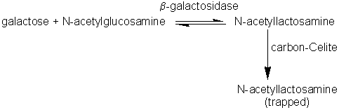

|
|
Glycosidases used in synthetic reactionsThis is a comparatively neglected topic probably because polysaccharides can be obtained readily from plant or microbial sources, because polysaccharide function is not so specifically related to its structure, and because the theory describing the functional significance of oligosaccharides is still being developed. As there is an abundance of knowledge about glycosidases and their specificities, there is no fundamental reason why they should not be used to synthesise oligosaccharides. There are few examples in the literature of oligosaccharides being constructed using enzymes such as dextransucrase (EC 2.4.1.5), levansucrase (EC 2.4.1.10), cyclomaltodextrin glucanotransferase (EC 2.4.1.19) and b-galactosidase (EC 3.2.1.23) to build up glucose, fructose or galactose residues on suitable acceptors. Fructosyltransferases (e.g., inulosucrase, EC 2.4.1.9) have been used to synthesise compounds such as sucrose-6-acetate, xylosucrose (b-D-fructofuranosyl-(2,1)-a-D-xylopyranoside) and the low cariogenic sweetener, 'neosugar' which consists of a mixture of glucose, sucrose and b-2,1 linked fructans with terminal non-reducing glucose residues (typical composition before chromatographic refinement: 2% fructose, 26% glucose, 11% sucrose, 30% 1-kestose (b-D-fructofuranosyl-(2,1)-b-D-fructofuranosyl- (2,1)-a-D-glucopyranose), 25% nystose (b-D-fructofuranosyl- (2,1)-b-D-fructofuranosyl-(2,1)-b-D-fructofuranosyl-(2,1)-a-D- glucopyranose) and 6% higher oligosaccharides). sucrose + glucose-6-acetate sucrose + xylose sucrose + sucrose 1-kestose + sucrose As shown in reaction scheme [7.16], dextransucrase can be used to produce dextran (a polymer of a-1,6 linked glucose residues) from sucrose. Dextran is used in gel chromatographic media, such as Sephadex, in the aqueous 2-phase systems already described, and as a blood plasma extender. For any of these uses it is undesirable to have cells remaining in the dextran so the dextransucrase, produced extracellularly by Leuconostoc mesenteroides is purified before use. The size of dextran molecules produced may be controlled by including small concentrations of sugars such as maltose which compete with sucrose as acceptors for glucose residues from the donor sucrose molecules. Thermodynamically controlled synthesis of oligosaccharides, catalysed by glycosidases, is possible by use of high substrate concentrations and a 'molecular trap' to remove the products. For example, b-galactosidase may be used to synthesise N-acetyllactosamine (b-D-galactopyranosyl-(1,6)-2-acetamido- 2-deoxy-D-glucose) using a carbon-celite column to remove it, as formed.  N-acetyllactosamine (trapped by carbon celite)"> [7.17] There seems to have been no systematic attempt to construct hetero-oligosaccharides in a stepwise movement yet thermodynamically or kinetically controlled reactions could be used just as in peptide synthesis.
This page was established in 2004 and last updated by Martin
Chaplin |